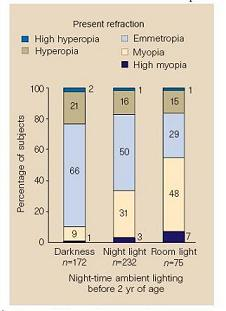
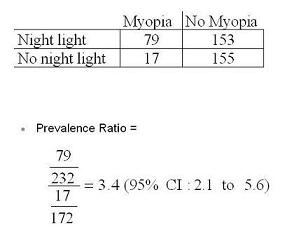
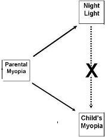

Example: Confounding Bias - Night Lite
Lead Author(s): Jeff Martin, MD
Example of Confounding: Night Lite
Confounding can be found in Quinn's study of myopia and ambient lightning.
Quinn studied children, who were exposed to ambient night lightning before two years of age.
In the figure below you can see that according to this study these children, tested at 2 - 16 years age,
- the prevalence of myopia dramatically increased with exposure to night light.

2x2 Table of Study Data
Looking at the data in our standard notation of a 2x2 table below we see a prevalence of 3.4.
- This study strongly suggested that ambient nighttime lighting via night lights, before age 2,
- was associated with the occurrence of nearsightedness in children.
- Here kids, who used nightlights, were over 3 times more likely to have myopia.

Responses to Study
This study prompted responses from two other investigators: Zadnik and Gwiazda, who showed that was no association in their studies and attributed the original finding to confounding.
As seen in the figure below Zadnik and Gwiazda believed that the
- apparent association of the use of a night light and child's myopia was likely due to confounding by the parent's myopia.

These authors provided direct data that nearsightedness in parents is associated with the use of night lights,
- probably to help the parents see better.
- And, there are data that myopia is inherited; ie if parents have it, their kids are more likely to have it.
Confounder: Parents' Myopia
So, this is an example, where parenteral myopia confounds the relationship between night lights and child's myopia and there is no real direct, or what we call independent, association between use of night lights and child's myopia.
References
Gwiazda, J., Ong, E., Held, R., & Thorn, F. (2000). Myopia and ambient night-time lighting. Nature, 404(6774), 144
Quinn, G. E., Shin, C. H., Maguire, M. G., & Stone, R. A. (1999). Myopia and ambient lighting at night. Nature, 399(6732), 113-114.
Zadnik, K., Jones, L. A., Irvin, B. C., Kleinstein, R. N., Manny, R. E., Shin, J. A., et al. (2000). Myopia and ambient night-time lighting. CLEERE Study Group. Collaborative Longitudinal Evaluation of Ethnicity and Refractive Error. Nature, 404(6774), 143-144.